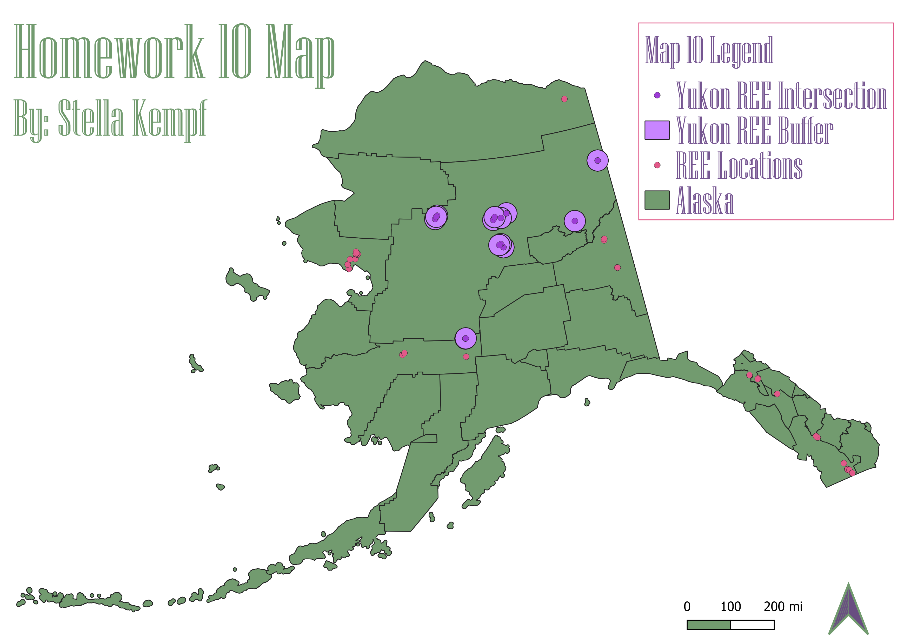

Homework 10: Geoprocessing Analysis
Stella Kempf
This map aims to answer the question: How many buffered REE (Rare Earth Element) points fall within
the Yukon-Koyukuk county boundaries? To answer this question, I first imported a shapefile map of Alaska
and a shapefile containing the points of all the REE occurences in the U.S.. I then selected the
Yukon-Koyukuk county and preformed an intersection of the county and the REE points. After I completed
the intersection, I then took the newly intersected points and added a 25 mile buffer around them. Once
I had changed the colors of the newly buffered REE points, I was then able to count how many fell within
Yukon-Koyukuk county. The answer to my question is that 13 buffered REE points fall within Yukon-Koyukuk
county. I chose to use a buffer of 25 miles because Yukon-Koyukuk county has an area of 147,805 sq mi,
making it the largest county in the United States. I also chose to keep the original REE points because it
allowed for a great comparison of how many more REE points Yukon-Koyukuk county has compared to the other
counties in Alaska.

Data used for this project
Link to website where I found the Alaska data
Link to website where I found the REE data